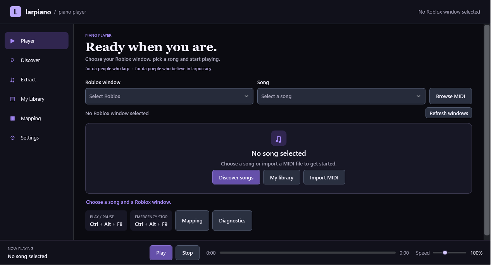

Open larpiano
Download the Windows ZIP, extract all the files, and run Keynote.App.exe.
Pick a song, take a seat at your piano in Roblox, and let larpiano play the keys.
Windows x64 · ZIP from GitHub Releases

The larpiano player on Windows
From MIDI to piano
Bring your own MIDI or select one from your local library.
Download the Windows ZIP, extract all the files, and run Keynote.App.exe.
Sit at your piano in Roblox. Select its window, choose a MIDI, and verify the mapping for that piano.
Focus Roblox and press Ctrl + Alt + F8 to play or pause. Ctrl + Alt + F9 stops playback.
Inside larpiano
Keep a collection, find an arrangement, and check the notes before you play.
Import MIDI files and keep downloaded arrangements in a local library.
Search supported catalogues and inspect tracks and notes before importing.
Configure your keys and verify the mapping for the piano you’re using.
Before you play
No songs are bundled. Import your own MIDI files or use the supported catalogues, subject to their terms.
Piano layouts differ. Configure and verify your mapping for the specific piano before playback.
The Updater tab checks GitHub Releases. Download a new ZIP and install it manually.
for da people who larp